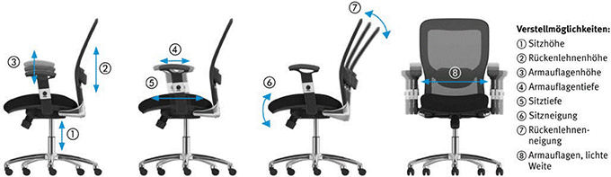
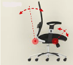
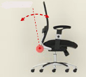
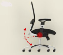
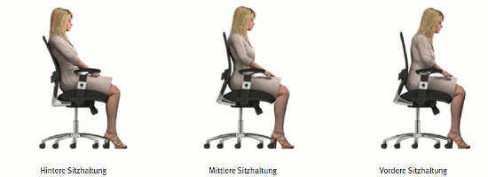

| Anhang der Arbeitsstättenverordnung Nr. 3.3 Ziffer 2 |
|
| (2) | Kann die Arbeit ganz oder teilweise sitzend verrichtet werden oder lässt es der Arbeitsablauf zu, sich zeitweise zu setzen, sind den Beschäftigten am Arbeitsplatz Sitzgelegenheiten zur Verfügung zu stellen. Können aus betriebstechnischen Gründen keine Sitzgelegenheiten unmittelbar am Arbeitsplatz aufgestellt werden, obwohl es der Arbeitsablauf zulässt, sich zeitweise zu setzen, müssen den Beschäftigten in der Nähe der Arbeitsplätze Sitzgelegenheiten bereitgestellt werden. |
Der Büroarbeitsstuhl soll die natürliche Haltung des Menschen im Sitzen unterstützen und im angemessenen Verhältnis zur Arbeitsaufgabe Bewegungen fördern.
Das aus Sitz und Rückenlehne bestehende Oberteil ist drehbar und höhenverstellbar. Das Untergestell ist mit Rollen ausgestattet.
Wichtige Kriterien für die Auswahl sind:
Büroarbeitsstühle sollen konstruktiv mindestens auf ein Körpergewicht von 110 kg und eine tägliche Nutzungszeit von acht Stunden ausgelegt sein. Büroarbeitsstühle, die von schwereren Personen und/oder länger als acht Stunden/Tag benutzt werden, müssen hierfür geeignet sein.
Der Büroarbeitsstuhl muss so gestaltet sein, dass ein Verletzungsrisiko für den Benutzer oder auch für Dritte minimiert ist. Die bestimmungsgemäße und die nach vernünftigem Ermessen vorhersehbare Verwendung sind dabei zu berücksichtigen.
Dieses ist gegeben, wenn die Anforderungen hinsichtlich
eingehalten sind.
Standsicherheit ist gegeben, wenn der Büroarbeitsstuhl bei Belastung der Sitzflächenvorderkante, beim Hinauslehnen über die Armlehnen, beim Zurücklehnen und beim Sitzen auf der Vorderkante nicht kippt.
Dieses bedingt im Allgemeinen ein Untergestell mit fünf Abstützpunkten. So darf unter anderem ein Mindestabstand von 195 mm zwischen Drehachse des Büroarbeitsstuhles und Kippkante – das Standsicherheitsmaß – nicht unterschritten werden. Bei der Verwendung von Rollen ist von der für die Standsicherheit ungünstigsten Stellung zweier benachbarter Rollen auszugehen. Um Stolpergefahren zu vermeiden, darf bei Vergrößerung des Standsicherheitsmaßes die größte Ausladung des Untergestells nicht mehr als 365 mm, bei Lenkrollen 415 mm, von der Drehachse des Büroarbeitsstuhls betragen. Eine Sicherheit gegen Kippen muss bei größtmöglicher Ausladung der Rückenlehne gegeben sein (Abbildung 34).
 |
|
|
Abb. 34 Verstellmöglichkeiten an einem Büroarbeitsstuhl
Tragende Bauteile müssen die auftretenden Kräfte sicher aufnehmen, das heißt, es dürfen keine Brüche oder bleibenden Verformungen entstehen und sich keine Teile unbeabsichtigt lösen. Detaillierte Anforderungen und Prüfungen für Standsicherheit und Stabilität sind in den Produktnormen festgelegt.
Die individuelle Anpassbarkeit des Büroarbeitsstuhles erfordert verschiedene Verstelleinrichtungen (Abbildung 34). Die einstellbaren und beweglichen Teile müssen so ausgelegt sein, dass Verletzungen und unbeabsichtigtes Bedienen vermieden werden. Die sicherheitstechnische und ergonomische Gestaltung und Anordnung der Stellteile bedingt, dass sie leicht zugänglich sind, ihre Betätigung in Sitzhaltung möglich ist und ihre Bewegungsrichtung der Stuhlfunktion entspricht.
Selbsttragende Sitzhöhenverstellelemente mit Energiespeicher (Gasfedern) dürfen nur eine stirnseitige Auslösung aufweisen, müssen im tragenden Bereich aus einem Stück gefertigt sein und sind über einen Konus am Sitz zu befestigen. Am Büroarbeitsstuhl muss gut sichtbar folgender Hinweis vorhanden sein:
| Achtung! Austausch und Arbeiten im Bereich des Sitzhöhenverstellelementes nur durch eingewiesenes Personal. |
Quetsch- und Scherstellen für Finger durch bewegliche Teile werden vermieden, wenn zugängliche Zwischenräume in jeder Position während der Bewegung entweder ≤ 4 mm oder ≥ 25 mm sind. Bei geringeren Gefährdungen (z. B. reduzierte Kräfte und langsame Bewegungen) darf das untere Maß auch ≤ 8 mm sein, wenn geprüft wurde, ob zusätzliche gestalterische Maßnahmen oder Abdeckungen notwendig sind.
Zur Verhinderung von Gefahren durch unbeabsichtigtes Wegrollen müssen die Rollen beim unbelasteten Büroarbeitsstuhl gebremst sein. Um Kippgefahren zu vermeiden, müssen die Rollen beim belasteten Büroarbeitsstuhl leichtgängig sein. Der Rollwiderstand hängt vom Fußbodenbelag, den Laufeigenschaften und der Belastung der Rollen ab. Die Rollen sind dem Fußbodenbelag anzupassen, das heißt bei weichem Belag, wie beispielsweise Teppichboden, sind harte Rollen und bei hartem Belag, wie beispielsweise Parkett, weiche Rollen einzusetzen. Harte Rollen werden einfarbig und weiche Rollen zweifarbig ausgeführt. Ein Büroarbeitsstuhl darf nur mit gleichartigen Rollen ausgestattet sein.
Jedem Büroarbeitsstuhl ist eine Benutzerinformation in deutscher Sprache beizufügen. Diese sollte in einer dauerhaften Aufnahmemöglichkeit am Büroarbeitsstuhl untergebracht sein.
Ergonomisch sind Büroarbeitsstühle gestaltet, wenn die Anforderungen hinsichtlich der
eingehalten sind.
Eine ausreichende Verstellbarkeit des Sitzes in der Höhe ist gegeben, wenn Benutzer mit unterschiedlichen Körpermaßen die Referenz-Sitzhaltung einnehmen können (Abbildung 26). Die Unterschenkellänge einschließlich Fuß und Schuhwerk bestimmen dabei die Sitzhöhe.
Zur Vermeidung unzuträglicher Stoßbelastungen der Wirbelsäule muss das Körpergewicht beim Hinsetzen durch eine geeignete Stuhlkonstruktion federnd abgefangen werden. Auch in der untersten Einstellung des Sitzes sollte eine Federung (≥ 10 mm Federweg) spürbar sein.
Die Sitztiefe ist so auszulegen, dass kleine Benutzer ausreichenden Beckenhalt durch die Rückenlehne finden und große Benutzer ausreichende Auflageflächen für die Oberschenkel haben. Dabei muss der Kniekehlenbereich frei bleiben. Durch die erheblichen Maßunterschiede der Benutzer sind in der Tiefe verstellbare Sitze zu bevorzugen. Einstellbare Sitzneigungswinkel sowohl nach vorn als auch nach hinten ermöglichen dem Nutzer, unterschiedliche Sitzhaltungen einzunehmen.
Die Polsterung des Sitzes ist so zu gestalten, dass es weder zu starken Verformungen noch zu unangenehmen punktuellen Druckeinwirkungen kommt. Der Bereich der Sitzflächenvorderkante sollte als Radius (40 mm ≤ R ≤ 120 mm) ausgeführt sein. Wärme- und Feuchtigkeitsstauungen im Sitz- und Rückenlehnenbereich werden durch geeignete Polsterung sowie entsprechende Bezugsmaterialien beziehungsweise Oberflächenstrukturen vermieden. Nicht geeignet sind voll verklebte Polsterflächen oder wasserdampfdichte Hinterschäumfolien.
Die Rückenlehne soll die natürliche Form der Wirbelsäule in den verschiedenen Sitzhaltungen unterstützen. Sie kann höhenverstellbar oder fest ausgeführt sein. Dabei sollte die Rückenlehnenoberkante bis in den Bereich der Schulterblätter reichen und die Rückenlehnenwölbung die Wirbelsäule in ihrem unteren und mittleren Bereich abstützen. Rückenlehnen sollten in ihrem oberen Bereich nicht nach vorne gezogen sein, da die Benutzer dann zu einer gekrümmten vorgeneigten Sitzhaltung gezwungen werden. Rückenlehnen, bei denen die Rückenlehnenoberkante 450 mm oder mehr über dem Sitz liegt, müssen nicht in der Höhe verstellbar sein. Sie sollten jedoch mit einer in der Höhe anpassbaren Lordosenstütze ausgestattet sein.
Unter Berücksichtigung der zum Teil miteinander in Konflikt stehenden Anforderungen durch Körpermaße und Körperhaltungen, der mechanischen Konstruktion, der verwendeten Arbeitsmittel und anderer Faktoren sind Mindestanforderungen für Abmessungen und Verstellbereiche festgelegt. Eine ausreichende Bewegungsfreiheit ist gegeben, wenn die Mindestanforderungen eingehalten sind.
Entspannte und ermüdungsfreie Körperhaltungen bei guter Bewegungsfreiheit – ohne Benutzung einer Fußstütze – werden insbesondere für kleine und große Benutzer gefördert, wenn die ergonomischen Empfehlungen für Abmessungen und Verstellbereiche erreicht werden (Tabelle 11).
| Stuhlmaße | ||
| Bezeichnung | Maßbereiche (mm) | |
| Mindestanforderungen | Ergonomische Empfehlungen | |
| Sitzhöhe, verstellbar | 400–510 | < 400–530 |
| Sitztiefe, verstellbar | 400–420 | 370–470 |
| Sitzbreite | 400 | > 450 |
| Rückenlehnen, Höhe des Abstützpunktes | 170–220 | 170–230 |
| Rückenlehnenoberkante, Höhe | 360 | > 450* |
| Rückenlehnen, Breite in Beckenkammhöhe | 360 | > 400 |
| Rückenlehnenneigung, verstellbar | 15° | > 15° |
| * Das Mindestmaß von 450 mm kann durch eine Höhenverstellbarkeit der Rückenlehne oder durch deren Bauhöhe erreicht werden. | ||
Tabelle 11
Armauflagen entlasten die Schulter- und Nackenmuskulatur und bieten Hilfe beim Aufstehen und Hinsetzen. Feste Armauflagen sollten wegen der unterschiedlichen Körpermaße der Benutzer nach vorne geneigt sein. Ihre Gestaltung darf die Ausübung der Tätigkeit nicht behindern. Eine bessere Anpassung ermöglichen Armauflagen, die in der Höhe und lichten Weite verstellbar sind (Tabelle 12).
| Armauflagenmaße | ||
| Bezeichnung | Maßbereiche (mm) | |
| Mindestanforderungen | Ergonomische Empfehlungen | |
| Armauflagenhöhe, verstellbar | 200–250 | 180–290 |
| Armauflagenlänge | 200 | 200 |
| Armauflagenbreite | 40 | > 50 |
| Armauflagenabstand zur Sitzvorderkante | 100 | > 150 |
| Armauflagen, lichte Weite verstellbar | 460–510 | < 460– > 510 |
Tabelle 12
Sitz und Rückenlehne sollen durch ihre Formgebung sowohl in der vorgeneigten als auch in der aufrechten und in der zurückgelehnten Sitzhaltung ein entspanntes, dynamisches Sitzen ermöglichen. Die Konstruktion des Büroarbeitsstuhles soll häufige Veränderungen der Sitzhaltung nicht nur ermöglichen, sondern aktiv unterstützen und fördern. Technisch kann dies durch unterschiedliche mechanische Komponenten und gegebenenfalls deren Kombination erreicht werden (Abbildung 35).
| Stuhlmechaniken | |
| Mechanik | Funktion |
| Synchron  |
Sitz und Rückenlehne neigbar Änderung des Öffnungswinkels körperbezogen |
| Permanent  |
Sitz fest und Rückenlehne neigbar |
| Wipp  |
Sitz und Rückenlehne fest verbunden Kippen nur im festen Winkelverhältnis möglich |
Abb. 35 Stuhlmechaniken ( = Drehpunkt)
Dynamisches Sitzen setzt im Allgemeinen permanent neigbare Rückenlehnen voraus. Sie sollen auch für die vorgeneigte Sitzhaltung eine feste Abstützung im unteren Bereich der Lendenwirbelsäule sicherstellen. Für die aufrechte und zurückgelehnte Sitzhaltung ist eine dem Körpergewicht ausreichend anpassbare Abstützung der Wirbelsäule erforderlich. So kann die Anlehnkraft unterschiedlich großer und schwerer Benutzer ausgeglichen werden. Für verschiedene Sitzhaltungen sind Arretierungsmöglichkeiten der Rückenlehne erforderlich (Abbildung 36).

Abb. 36 Dynamisches Sitzen
Die Synchronmechanik fördert über die Veränderung des Sitzöffnungswinkels hinaus auch eine Veränderung der Beinhaltung und Fußposition. Eine gute Synchronmechanik wird gekennzeichnet durch das Bewegungsverhältnis von Sitz- und Rückenlehne (1:2 bis 1:3), individuell einstellbare Lehnenrückstellkraft und die vom Bewegungsablauf abgedeckten Winkelbereiche. Bei abweichenden Bewegungsverhältnissen wird die Relativbewegung von Sitz und Rückenlehne zueinander als störend empfunden. In jedem Fall sollte die Konstruktion sicherstellen, dass beim Zurücklehnen ein Anheben der Sitzvorderkante vermieden wird.
Die Stuhlmechaniken einschließlich der Sitzhöhen-, Sitztiefen- und Sitzneigungsverstellungen sowie ihre Kombinationsmöglichkeiten erlauben mit den möglichen Rückenlehnenverstellungen in jeder Hinsicht individuelle Lösungen. Damit Fehleinstellungen vermieden und die positiven Möglichkeiten richtig genutzt werden, ist eine praxisnahe Einweisung in die Benutzung des Büroarbeitsstuhles unerlässlich.
Weitere Literatur
|